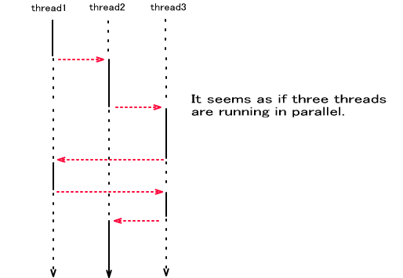
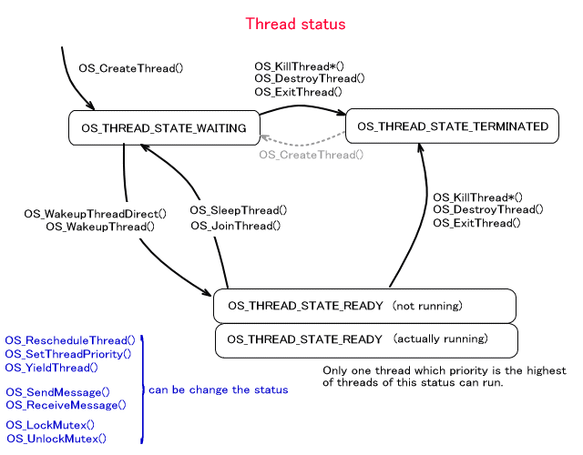
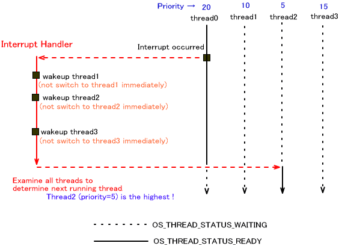
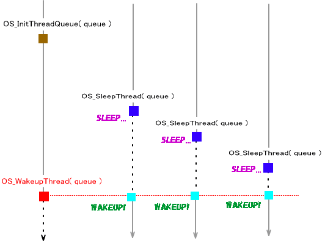
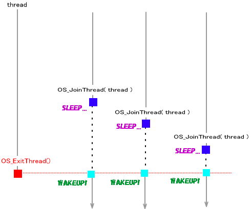

NitroSDK にはスレッドシステムが用意されています。スレッドはそれぞれ独立したコンテキストを持ち、タスクを分割して少しずつ処理することで、1つのCPUの動作で見た目に複数のモジュールの並行動作を行なわせることが出来る機構です。

スレッドの個数については、スレッド構造体やスタックがメモリに収まるかどうか以外の制限はありません。
スレッドシステムの初期化は OS_InitThread() を呼ぶことで行なわれます。 デフォルトでは、OS_Init() を呼んでいればスレッドシステムの初期化は行なわれていますので、アプリケーションで呼ぶ必要はありません。
スレッドシステムが初期化されているかどうかは OS_IsThreadAvailable() で調べることが出来ます。
スレッドシステムの初期化で、OS_InitThread() を呼び出したプログラム自らのスレッド化と、アイドルスレッドの作成が行なわれるので、この時点ですでに2つのスレッドが立ち上がっていることになります。スレッドの個数は、OS_GetNumberOfThread() で取得することが出来ます。
スレッドの状態
OS_CreateThread() で作成された直後のスレッドは、すぐに実行されるわけではありません。このスレッドはまだ「一時停止状態」にあります。 OS_WakeupThreadDirect() を呼び出すと「実行可能状態」となります。（そしてそのまま実行状態になる場合もあります。）
スレッドには優先度(プライオリティ・priority) が設定されています。実行可能状態であるスレッドの中で、最も優先度の高いものが実行状態となります。優先度はスレッドを作成するときに指定しますが、処理の途中で
OS_SetThreadPriority() によって変更することも可能です。優先度は 0〜31 で、値が小さいものがより優先度が高いスレッドであると定めています。つまり、0 が最も優先度の高いスレッドとなります。同じ優先度の場合については内部状態に依存します。(本ドキュメントの「明示的なリスケジューリング」の項参照。)
また、特別な優先度 32 のアイドルスレッドが作成されます。これは何もしないスレッドです。(アイドルスレッドと呼ぶこともあります。)
OS_GetThreadPriority() でスレッドの優先度を取得することが出来ます。
スレッドが OS_ExitThread() で終了すると、スレッドは「終了状態」へ移行します。 このスレッドがブロックしていた Mutex のロックを解除し、このスレッドの終了待ちをして一時停止状態になっていたスレッドを実行可能状態にします。そしてリスケジューリングを行って別のスレッドが実行可能状態となります。
スレッドが、タスクとなる関数を最後まで実行した場合も OS_ExitThread() が呼ばれたのと同様の処理となります。
他のスレッドを終了させる関数として、OS_DestroyThread() と OS_KillThread*() が用意されています。2つの違いについては、「スレッドデストラクタ」の項を参照してください。
スレッドの切り替わり
以下はスレッドの切り替わり ( リスケジューリング ) が発生する可能性があるイベントです。
・スレッドを実行可能状態にした。すなわち OS_WakeupThread()、OS_WakeupThreadDirect() が呼ばれた。
・スレッドを一時停止状態にした。すなわち OS_SleepThread() が呼ばれた。
・他のスレッドの終了待ちに入った。すなわち OS_JoinThread() が呼ばれた。
・スレッドが終了した。すなわちスレッドで動作している関数が終了位置まで到達したり、OS_ExitThread() が呼ばれた。
・スレッドのリスケジュールが明示的に行われた。すなわち OS_RescheduleThread() が呼ばれた。
・同優先度を考慮したスレッドのリスケジュールが明示的に行なわれた。すなわち
OS_YieldThread() が呼ばれた。
・スレッドの優先度を変更した。すなわち OS_SetThreadPriority() が呼ばれた。
・他のスレッドによって終了させられた。すなわち OS_KillThread*() や OS_DestroyThread() が呼ばれた。
他に、メッセージ関数 OS_SendMessage() や OS_ReceiveMessage() をブロックモードで呼び出し、ブロックされたか、メッセージの送受信を待っているより優先度の高いスレッドがあった場合、スレッドの切り替わりが発生します。
また、MUTEX によるスレッド排他制御でもスレッドの切り替わりが発生する場合があります。OS_LockMutex() でスレッドがロックされた場合と、OS_UnlockMutex() でより高い優先度のスレッドのロックが解除された場合です。(OS_TryLockMutex() ではリスケジューリングは発生しません)
スレッドのリスケジューリングは OS_DisableScheduler() で一時的に停止したり、OS_EnableScheduler() で再開したりすることが出来ます。このドキュメントの「リスケジューリングの一時停止」の項を参照してください。

割り込みとスレッドの切り替わり
割り込みハンドラ内では、スレッドの切り替わり要因となる関数が呼ばれても即座にスレッドが切り替わることはありません。そのようなイベントが発生したことを覚えておき、割込みハンドラから抜ける際に、最も優先度の高い実行可能状態であるスレッドへ制御が移ります。
以下の例では、thread1の起動、thread2の起動、thread3の起動、と3回スレッドが切り替わる可能性のある関数が呼ばれましたが、そこでは何もせず、割り込みハンドラを抜けるときに全体を調べ、実行可能状態であるスレッドの中から次に実行されるものを選びます。割込みハンドラ内でより優先度の高いスレッドが起動されても即座に切り替わらない、という点に注目してください。

このように、割り込みによってスレッドが切り替わることもありますので、スレッドの切り替わりが発生して欲しくないような処理を行なう個所では、割り込みを禁止にする必要があります。（もちろん理論的には、割り込みハンドラにスレッドの切り替わりを発生させるような記述が全く存在しないのならば、割り込みを禁止にする必要はありませんが、アプリケーションの割り込みハンドラとシステム内の割り込みハンドラの動作全てを把握するのは困難ですので、通常は割り込みを禁止にしてください。)
スレッドをまとめて起こす
別のあるスレッドのある地点に制御が移るまで、自分の実行を止めたい、という場合があるかもしれません。また、複数のスレッドを同時に起動させたい場合もあるかもしれません。このような場合、スレッドキューが便利です。
OS_InitThreadQueue() でスレッドキューを初期化し、そのキューに対し OS_SleepThread() でスレッドを登録すると、登録されたスレッドはそのスレッドキューを引数にして OS_WakeupThread() が呼ばれるまでスリープすることになります。OS_WakeupThread() が呼ばれると、指定のスレッドキューに登録されたスレッドはすべて実行可能状態になり、スレッドのリスケジューリングが発生します。(その結果、スレッドの切り替わりが発生するかどうかは実行可能状態であるスレッドの優先度によります)

他のスレッドとの結合
あるスレッドの終了まで、現在動作しているスレッドを一時停止状態にすることが可能です。この動作はいわば、終了するスレッドと、そのスレッドの終了を待って実行可能になるスレッドが結合されたかのように見えますので、リファレンス中でも「スレッドの結合」と表現しています。この仕組みはすべてのスレッドが内部で持っているスレッドキューを用いて実現されます。
thread1 と thread2 を結合する ( thread1 が終了するときに thread2 を実行可能状態にする
) 場合を考えます。thread1 のスレッドキューに thread2 を OS_JoinThread() を用いて登録します。thread1 は終了するときにスレッドキューを参照して、そこに登録されているものがあればそれを全てを実行可能状態にします。thread2
が登録されているので、thread2 は実行可能状態になります。
1つのスレッドに複数のスレッドを結合させることも出来ます。複数のスレッドに1つのスレッドを結合させることは出来ません。以下は1つのスレッドに複数のスレッドを結合させた例です。

スリープによるウェイト
時間を指定して、OS_Sleep() で、スリープによるウェイトを入れることが可能です。ただし、このためには OS_InitTick() と OS_InitAlarm() でチックシステムとアラームシステムが初期化されていなければなりません。
リスケジューリングの一時停止
スレッドシステムのリスケジューリングを一時停止する関数と、リスケジューリングを再開する関数が用意されています。
リスケジューリングが停止状態になっていると、OS_WakeupThread() や OS_SetThreadPriority() など、スレッドのリスケジューリングが発生する可能性のある関数が呼ばれても、リスケジューリングが行なわれなくなります。また、スレッドの終了などリスケジューリングが発生する可能性のある場面でもリスケジューリングしません。呼び出しの状況によっては動作するスレッドがなくなり、プログラムが停止することもあり得ますので、注意が必要です。
リスケジューリングを一時停止する関数は、OS_DisableScheduler() です。
リスケジューリングを再開する関数は、OS_EnableScheduler() です。
これらの関数は、割り込み禁止状態で呼ばれなければなりません。
明示的なリスケジューリング
OS_RescheduleThread() と OS_YieldThread() はスケジューリングを明示的に行う関数です。
OS_RescheduleThread() は、スケジューリングが禁止されていない場合に、実行可能状態であるスレッドの中で最も優先度が高いスレッドに
CPU の実行権を移します。(ただし、割込みハンドラから呼ばれた場合には実際のスケジューリング処理は後で行ないます。)
実行可能状態であるスレッドの中で、最も優先度が高いものが複数あった場合、内部で保持しているスレッド情報の順序に依存してスレッドが選択されます。スレッドは優先度順にリストで管理されていて、優先度の高いものほどリストの前に位置しています。OS_RescheduleThread() では、リストを前から辿って最初に発見した実行可能状態であるスレッドに実行権を移します。したがって、同じ優先度でもリストの前に位置しているものが常に選ばれることになります。
これに対し、OS_YieldThread() は、カレントスレッドと同じ優先度で実行可能状態であるスレッドが他に存在した場合、カレントスレッドをリストの後ろに繋ぎなおしてから(リストの最も後ろではありません。同じ優先度内で後ろ、という意味です。)、
OS_RescheduleThread() を呼び出します。これは同じ優先度の他のスレッドに実行のチャンスを与えるための処理です。
なお、OS_RescheduleThread() や OS_YieldThread() で必ずスレッドが切り替わるわけではありません。実行されるスレッドを優先度とリスト順に基づいて次に実行すべきスレッドを検索した結果、それまで実行していたスレッドが選択されればそのまま実行が続きます。また、他に実行するスレッドがない場合も同様です。
スレッドデストラクタ
スレッドには、スレッドデストラクタを設定することが出来ます。スレッドデストラクタは、そのスレッドの終了時に呼ばれる関数で、void* 型引数を１つとる void 型関数です。ただし、呼ばれるのは以下の場合です。、
・スレッドのタスクを最後まで実行し終わった
・OS_ExitThread()で終了した
・OS_KillThread*()で他のスレッドから終了させられた
・OS_KillThread*()で自らのスレッドを終了させた
以下の場合にはデストラクタ関数が呼ばれることはありません。
・OS_DestroyThread()で他のスレッドから終了させられた
・OS_DestroyThread()で自らのスレッドを終了させた
デストラクタ関数が実行されるときは、その終了するスレッドのコンテキストに切り替わって実行されます。他のスレッドに
Kill される場合はスタックは(チェック用のコードを除いた)最上位か、または別に用意したデストラクタ実行専用のスタックに変更されます。自らのスレッドを
Kill する場合はスタックをそのままにするか、別に用意したデストラクタ実行専用のスタックに変更されます。その指定は
OS_SetThreadDestructorStack() で行ないます。
デストラクタが実行される際、OS_KillThread() ではスレッドの優先度の変更はありませんが、OS_KillThreadWithPriority() ではスレッドの優先度を指定の値に変更します。
OS_KillThread*() ではユーザが任意の void* 値を与えることが出来ます。この値はデストラクタ関数を呼び出す際の引数となります。スレッドのタスクを最後まで実行し終わったり、OS_ExitThread() で終了した場合は NULL が渡されます。
スレッドにスレッドデストラクタを設定する関数は、OS_SetThreadDestructor() です。
スレッド状態を外部から変化させる場合の注意
スレッド外部から直接スレッドの状態を変化させる関数の使用については十分注意してください。
特にSDK ライブラリ内でスリープしているスレッドをライブラリの意図しない方法で起こしたりすることは思わぬ不具合に繋がる可能性があります。
例えばメインスレッドをフレームごとにスリープさせ、Vブランクハンドラで強制的に実行可能状態にするというシステムを組もうとした場合を考えます。フレーム内に処理が終わらずにVブランクに入ると、アプリケーションでスリープしていないのに(ライブラリ内で何かの処理待ちでスリープしているのに) Vブランクハンドラが無理やりメインスレッドを実行可能状態にすることがあるかもしれません。その結果、ライブラリでは必要な処理を待たずにプログラムが先に進んでしまい、プログラムが破綻するかもしれません。
2008/01/17 スレッド状態を外部から変化させる場合の注意を追加
2005/08/09 スレッドデストラクタ実行時のスタックについて修正
2005/07/07 スレッドデストラクタについて記述
2005/07/06 スレッドの個数制限がなくなった
2005/06/20 「明示的なリスケジューリング」を追加
2005/03/08 用語統一 [割込み] → [割り込み]
2005/01/21 リスケジューリングの停止と再開について追記
2004/12/14 用語や語尾など修正
2004/11/09 初版